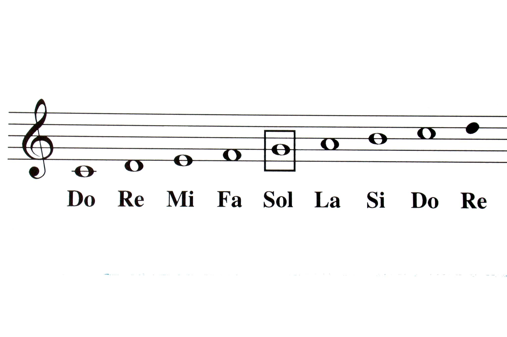

¿Qué es la teoría musical?
La teoría musical nos ayuda a comprender cómo se organiza la música. Para empezar, podemos aprender a reconocer las notas y entender cómo se representa la duración de los sonidos.
Si quieres aprender teoría musical desde cero, aquí encontrarás una introducción a las notas musicales en el pentagrama, las figuras y los silencios. No necesitas conocimientos previos: iremos paso a paso.
¿Por dónde empezar?
- Conoce los nombres de las notas.
- Observa cómo se colocan en el pentagrama.
- Compara las figuras musicales y sus valores.
- Practica contando una pulsación regular.
Notas musicales en el pentagrama
Los siete nombres básicos de las notas musicales son:
Do · Re · Mi · Fa · Sol · La · Si
Después de si, la secuencia vuelve a empezar en do, en un registro más agudo. También podemos recorrerla en sentido contrario, hacia sonidos más graves.
¿Qué es el pentagrama?
El pentagrama está formado por cinco líneas y cuatro espacios. Las notas se escriben sobre las líneas o en los espacios. Tanto las líneas como los espacios se cuentan de abajo arriba.
La clave indica qué nota corresponde a cada posición. En clave de sol en segunda línea, esa segunda línea corresponde a la nota sol.
Ejemplo en clave de sol
- Líneas, de abajo arriba: mi, sol, si, re y fa.
- Espacios, de abajo arriba: fa, la, do y mi.

Figuras musicales y su valor
Las figuras musicales indican la duración de los sonidos. Una blanca dura la mitad que una redonda, y una negra dura la mitad que una blanca.
Para este primer ejemplo tomaremos la negra como un tiempo. Con esta referencia podemos comparar las siguientes figuras:
| Figura | Duración | Equivalencia |
|---|---|---|
| Redonda | 4 tiempos | 2 blancas |
| Blanca | 2 tiempos | 2 negras |
| Negra | 1 tiempo | 2 corcheas |
| Corchea | 1/2 tiempo | 2 semicorcheas |
| Semicorchea | 1/4 de tiempo | La mitad de una corchea |
¿Qué son los silencios musicales?
Los silencios representan periodos durante los que no se toca una nota. Cada figura tiene un silencio correspondiente con la misma duración.
Por ejemplo, si la negra vale un tiempo, el silencio de negra también dura un tiempo. Durante ese tiempo seguimos contando, aunque no hagamos sonar una nota.
Practica con cuatro pulsaciones
Cuenta «uno, dos, tres, cuatro» a una velocidad regular. Da una palmada en «uno» y en «tres». En «dos» y «cuatro», continúa contando sin dar palmadas.
Vídeo de apoyo
Mira este vídeo para repasar las figuras musicales y sus duraciones.
Fuente: Ver el vídeo original en YouTube .